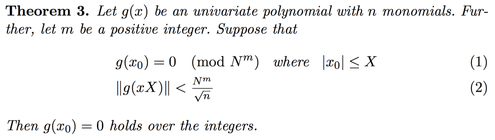
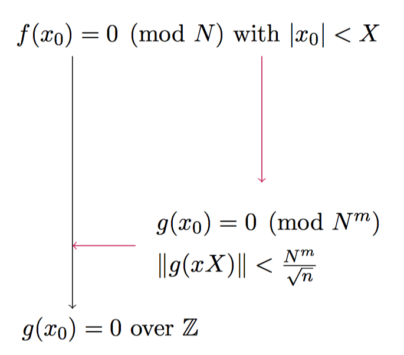

Coppersmith 相关攻击
基本原理
Coppersmith 相关攻击与Don Coppersmith 紧密相关，他提出了一种针对于模多项式（单变量，二元变量，甚至多元变量）找所有小整数根的多项式时间的方法。
这里我们以单变量为主进行介绍，假设
- 模数为 N ，N 具有一个因子 $b\geq N^{\beta},0< \beta \leq 1$
- 多项式 F 的次数为 $\delta$
那么该方法可以在$O(c\delta^5log^9(N))$ 的复杂度内找到该多项式所有的根$x_0$，这里我们要求 $|x_0|<cN^{\frac{\beta^2}{\delta}}$ 。
在这个问题中，我们的目标是找到在模 N 意义下多项式所有的根，这一问题被认为是复杂的。Coppersmith method 主要是通过 Lenstra–Lenstra–Lovász lattice basis reduction algorithm（LLL）方法找到
- 与该多项式具有相同根 $x_0$
- 更小系数
- 定义域为整数域
的多项式 g，由于在整数域上找多项式的根是简单的（Berlekamp–Zassenhaus），从而我们就得到了原多项式在模意义下的整数根。
那么问题的关键就是如何将 f 转换到 g 呢？Howgrave-Graham 给出了一种思路

也就是说我们需要找到一个具有“更小系数”的多项式 g，也就是下面的转换方式

在 LLL 算法中，有两点是非常有用的
- 只对原来的基向量进行整数线性变换，这可以使得我们在得到 g 时，仍然以原来的 $x_0$ 为根。
- 生成的新的基向量的模长是有界的，这可以使得我们利用 Howgrave-Graham 定理。
在这样的基础之上，我们再构造出多项式族 g 就可以了。
关于更加细节的内容，请自行搜索。同时这部分内容也会不断更新。
需要注意的是，由于 Coppersmith 根的约束，在 RSA 中的应用时，往往只适用于 e 较小的情况。
Basic Broadcast Attack
攻击条件
如果一个用户使用同一个加密指数 e 加密了同一个密文，并发送给了其他 e 个用户。那么就会产生广播攻击。这一攻击由 Håstad 提出。
攻击原理
这里我们假设 e 为 3，并且加密者使用了三个不同的模数 $n_1,n_2,n_3$ 给三个不同的用户发送了加密后的消息 m，如下
$$ \begin{align} c_1&=m^3\bmod n_1 \ c_2&=m^3\bmod n_2 \ c_3&=m^3\bmod n_3 \end{align} $$
这里我们假设 $n_1,n_2,n_3$ 互素，不然，我们就可以直接进行分解，然后得到 d，进而然后直接解密。
同时，我们假设 $m<n_i, 1\leq i \leq 3$。如果这个条件不满足的话，就会使得情况变得比较复杂，这里我们暂不讨论。
既然他们互素，那么我们可以根据中国剩余定理，可得$m^3 \equiv C \bmod n_1n_2n_3$。
此外，既然 $m<n_i, 1\leq i \leq 3$，那么我们知道 $m^3 < n_1n_2n_3$ 并且 $C<m^3 < n_1n_2n_3$，那么 $m^3 = C$，我们对 C 开三次根即可得到 m 的值。
对于较大的 e 来说，我们只是需要更多的明密文对。
SCTF RSA3 LEVEL4
参考 http://ohroot.com/2016/07/11/rsa-in-ctf。
这里我们以 SCTF RSA3 中的 level4 为例进行介绍，首先编写代码提取 cap 包中的数据，如下
#!/usr/bin/env python
from scapy.all import *
import zlib
import struct
PA = 24
packets = rdpcap('./syc_security_system_traffic3.pcap')
client = '192.168.1.180'
list_n = []
list_m = []
list_id = []
data = []
for packet in packets:
# TCP Flag PA 24 means carry data
if packet[TCP].flags == PA or packet[TCP].flags == PA + 1:
src = packet[IP].src
raw_data = packet[TCP].load
head = raw_data.strip()[:7]
if head == "We have":
n, e = raw_data.strip().replace("We have got N is ",
"").split('\ne is ')
data.append(n.strip())
if head == "encrypt":
m = raw_data.replace('encrypted messages is 0x', '').strip()
data.append(str(int(m, 16)))
with open('./data.txt', 'w') as f:
for i in range(0, len(data), 2):
tmp = ','.join(s for s in data[i:i + 2])
f.write(tmp + '\n')
其次，利用得到的数据直接使用中国剩余定理求解。
from functools import reduce
import gmpy
import json, binascii
def modinv(a, m):
return int(gmpy.invert(gmpy.mpz(a), gmpy.mpz(m)))
def chinese_remainder(n, a):
sum = 0
prod = reduce(lambda a, b: a * b, n)
# 并行运算
for n_i, a_i in zip(n, a):
p = prod // n_i
sum += a_i * modinv(p, n_i) * p
return int(sum % prod)
nset = []
cset = []
with open("data.txt") as f:
now = f.read().strip('\n').split('\n')
for item in now:
item = item.split(',')
nset.append(int(item[0]))
cset.append(int(item[1]))
m = chinese_remainder(nset, cset)
m = int(gmpy.mpz(m).root(19)[0])
print binascii.unhexlify(hex(m)[2:-1])
得到密文，然后再次解密即可得到 flag。
H1sTaDs_B40aDcadt_attaCk_e_are_same_and_smA9l
题目
- 2017 WHCTF OldDriver
- 2018 N1CTF easy_fs
Broadcast Attack with Linear Padding
对于具有线性填充的情况下，仍然可以攻击，这时候就会使用 Coppersmith method 的方法了，这里暂不介绍。可以参考
- https://en.wikipedia.org/wiki/Coppersmith%27s_attack#Generalizations
Related Message Attack
攻击条件
当 Alice 使用同一公钥对两个具有某种线性关系的消息 M1 与 M2 进行加密，并将加密后的消息 C1，C2 发送给了 Bob 时，我们就可能可以获得对应的消息 M1 与 M2。这里我们假设模数为 N，两者之间的线性关系如下
$$ M_1 \equiv f(M_2) \bmod N $$
其中 f 为一个线性函数，比如说 $f=ax+b$。
在具有较小错误概率下的情况下，其复杂度为 $O(elog^2N)$。
这一攻击由 Franklin，Reiter 提出。
攻击原理
首先，我们知道 $C_1 \equiv M_1 ^e \bmod N$，并且 $M_1 \equiv f(M_2) \bmod N$，那么我们可以知道 $M_2$ 是 $f(x)^e \equiv C_1 \bmod N$ 的一个解，即它是方程 $f(x)^e-C_1$ 在模 N 意义下的一个根。同样的，$M_2$ 是 $x^e - C_2$ 在模 N 意义下的一个根。所以说 $x-M_2$ 同时整除以上两个多项式。因此，我们可以求得两个多项式的最大公因子，如果最大公因子恰好是线性的话，那么我们就求得了 $M_2$。需要注意的是，在 $e=3$ 的情况下，最大公因子一定是线性的。
这里我们关注一下 $e=3$，且 $f(x)=ax+b$ 的情况。首先我们有
$$ C_1 \equiv M_1 ^3 \bmod N,M_1 \equiv aM_2+b \bmod N $$
那么我们有
$$ C_1 \equiv (aM_2+b)^3 \bmod N,C_2 \equiv M_2^3 \bmod N $$
我们需要明确一下我们想要得到的是消息 m，所以需要将其单独构造出来。
首先，我们有式 1
$$ (aM_2+b)^3=a^3M_2^3+3a^2M^2b+3aM_2b^2+b^3 $$
再者我们构造如下式 2
$$ (aM_2)^3-b^3 \equiv (aM_2-b)(a^2M_2^2+aM_2b+b^2) \bmod N $$
根据式 1 我们有
$$ a^3M_2^3-2b^3+3b(a^2M_2^2+aM_2b+b^2) \equiv C_1 \bmod N $$
继而我们有式 3
$$ 3b(a^2M_2^2+aM_2b+b^2) \equiv C_1-a^3C_2+2b^3 \bmod N $$
那么我们根据式 2 与式 3 可得
$$ (a^3C_2-b^3)*3b \equiv (aM_2-b)( C_1-a^3C_2+2b^3 ) \bmod N $$
进而我们有
$$ aM_2-b=\frac{3a^3bC_2-3b^4}{C_1-a^3C_2+2b^3} $$
进而
$$ aM_2\equiv \frac{2a^3bC_2-b^4+C_1b}{C_1-a^3C_2+2b^3} $$
进而
$$ M_2 \equiv\frac{2a^3bC_2-b^4+C_1b}{aC_1-a^4C_2+2ab^3}=\frac{b}{a}\frac{C_1+2a^3C_2-b^3}{C_1-a^3C_2+2b^3} $$
上面的式子中右边所有的内容都是已知的内容，所以我们可以直接获取对应的消息。
有兴趣的可以进一步阅读 A New Related Message Attack on RSA 以及 paper 这里暂不做过多的讲解。
SCTF RSA3
这里我们以 SCTF RSA3 中的 level3 为例进行介绍。首先，跟踪 TCP 流可以知道，加密方式是将明文加上用户的 user id 进行加密，而且还存在多组。这里我们选择第 0 组和第 9 组，他们的模数一样，解密脚本如下
import gmpy2
id1 = 1002
id2 = 2614
c1 = 0x547995f4e2f4c007e6bb2a6913a3d685974a72b05bec02e8c03ba64278c9347d8aaaff672ad8460a8cf5bffa5d787c5bb724d1cee07e221e028d9b8bc24360208840fbdfd4794733adcac45c38ad0225fde19a6a4c38e4207368f5902c871efdf1bdf4760b1a98ec1417893c8fce8389b6434c0fee73b13c284e8c9fb5c77e420a2b5b1a1c10b2a7a3545e95c1d47835c2718L
c2 = 0x547995f4e2f4c007e6bb2a6913a3d685974a72b05bec02e8c03ba64278c9347d8aaaff672ad8460a8cf5bffa5d787c72722fe4fe5a901e2531b3dbcb87e5aa19bbceecbf9f32eacefe81777d9bdca781b1ec8f8b68799b4aa4c6ad120506222c7f0c3e11b37dd0ce08381fabf9c14bc74929bf524645989ae2df77c8608d0512c1cc4150765ab8350843b57a2464f848d8e08L
n = 25357901189172733149625332391537064578265003249917817682864120663898336510922113258397441378239342349767317285221295832462413300376704507936359046120943334215078540903962128719706077067557948218308700143138420408053500628616299338204718213283481833513373696170774425619886049408103217179262264003765695390547355624867951379789924247597370496546249898924648274419164899831191925127182066301237673243423539604219274397539786859420866329885285232179983055763704201023213087119895321260046617760702320473069743688778438854899409292527695993045482549594428191729963645157765855337481923730481041849389812984896044723939553
a = 1
b = id1 - id2
def getmessage(a, b, c1, c2, n):
b3 = gmpy2.powmod(b, 3, n)
part1 = b * (c1 + 2 * c2 - b3) % n
part2 = a * (c1 - c2 + 2 * b3) % n
part2 = gmpy2.invert(part2, n)
return part1 * part2 % n
message = getmessage(a, b, c1, c2, n) - id2
message = hex(message)[2:]
if len(message) % 2 != 0:
message = '0' + message
print message.decode('hex')
得到明文
➜ sctf-rsa3-level3 git:(master) ✗ python exp.py
F4An8LIn_rElT3r_rELa53d_Me33Age_aTtaCk_e_I2_s7aLL
当然，我们也可以直接使用 sage 来做，会更加简单一点。
import binascii
def attack(c1, c2, b, e, n):
PR.<x>=PolynomialRing(Zmod(n))
g1 = x^e - c1
g2 = (x+b)^e - c2
def gcd(g1, g2):
while g2:
g1, g2 = g2, g1 % g2
return g1.monic()
return -gcd(g1, g2)[0]
c1 = 0x547995f4e2f4c007e6bb2a6913a3d685974a72b05bec02e8c03ba64278c9347d8aaaff672ad8460a8cf5bffa5d787c5bb724d1cee07e221e028d9b8bc24360208840fbdfd4794733adcac45c38ad0225fde19a6a4c38e4207368f5902c871efdf1bdf4760b1a98ec1417893c8fce8389b6434c0fee73b13c284e8c9fb5c77e420a2b5b1a1c10b2a7a3545e95c1d47835c2718L
c2 = 0x547995f4e2f4c007e6bb2a6913a3d685974a72b05bec02e8c03ba64278c9347d8aaaff672ad8460a8cf5bffa5d787c72722fe4fe5a901e2531b3dbcb87e5aa19bbceecbf9f32eacefe81777d9bdca781b1ec8f8b68799b4aa4c6ad120506222c7f0c3e11b37dd0ce08381fabf9c14bc74929bf524645989ae2df77c8608d0512c1cc4150765ab8350843b57a2464f848d8e08L
n = 25357901189172733149625332391537064578265003249917817682864120663898336510922113258397441378239342349767317285221295832462413300376704507936359046120943334215078540903962128719706077067557948218308700143138420408053500628616299338204718213283481833513373696170774425619886049408103217179262264003765695390547355624867951379789924247597370496546249898924648274419164899831191925127182066301237673243423539604219274397539786859420866329885285232179983055763704201023213087119895321260046617760702320473069743688778438854899409292527695993045482549594428191729963645157765855337481923730481041849389812984896044723939553
e=3
a = 1
id1 = 1002
id2 = 2614
b = id2 - id1
m1 = attack(c1,c2, b,e,n)
print binascii.unhexlify("%x" % int(m1 - id1))
结果如下
➜ sctf-rsa3-level3 git:(master) ✗ sage exp.sage
sys:1: RuntimeWarning: not adding directory '' to sys.path since everybody can write to it.
Untrusted users could put files in this directory which might then be imported by your Python code. As a general precaution from similar exploits, you should not execute Python code from this directory
F4An8LIn_rElT3r_rELa53d_Me33Age_aTtaCk_e_I2_s7aLL
题目
- hitcon 2014 rsaha
- N1CTF 2018 rsa_padding
Coppersmith’s short-pad attack
攻击条件
目前在大部分消息加密之前都会进行 padding，但是如果 padding 的长度过短，也有可能被很容易地攻击。
这里所谓 padding 过短，其实就是对应的多项式的根会过小。
攻击原理
我们假设爱丽丝要给鲍勃发送消息，首先爱丽丝对要加密的消息 M 进行随机 padding，然后加密得到密文 C1，发送给鲍勃。这时，中间人皮特截获了密文。一段时间后，爱丽丝没有收到鲍勃的回复，再次对要加密的消息 M 进行随机 padding，然后加密得到密文 C2，发送给 Bob。皮特再一次截获。这时，皮特就可能可以利用如下原理解密。
这里我们假设模数 N 的长度为 k，并且 padding 的长度为 $m=\lfloor \frac{k}{e^2} \rfloor$。此外，假设要加密的消息的长度最多为 k-m 比特，padding 的方式如下
$$ M_1=2^mM+r_1, 0\leq r_1\leq 2^m $$
消息 M2 的 padding 方式类似。
那么我们可以利用如下的方式来解密。
首先定义
$$ g_1(x,y)=x^e-C_1 g_2(x,y)=(x+y)^e-C_2 $$
其中 $y=r_2-r_1$。显然这两个方程具有相同的根 M1。然后还有一系列的推导。
Known High Bits Message Attack
攻击条件
这里我们假设我们首先加密了消息 m，如下
$$ C\equiv m^d \bmod N $$
并且我们假设我们知道消息 m 的很大的一部分 $m_0$，即 $m=m_0+x$，但是我们不知道 $x$。那么我们就有可能通过该方法进行恢复消息。这里我们不知道的 x 其实就是多项式的根，需要满足 Coppersmith 的约束。
可以参考 https://github.com/mimoo/RSA-and-LLL-attacks。
Factoring with High Bits Known
攻击条件
当我们知道一个公钥中模数 N 的一个因子的较高位时，我们就有一定几率来分解 N。
攻击工具
请参考 https://github.com/mimoo/RSA-and-LLL-attacks。上面有使用教程。关注下面的代码
beta = 0.5
dd = f.degree()
epsilon = beta / 7
mm = ceil(beta**2 / (dd * epsilon))
tt = floor(dd * mm * ((1/beta) - 1))
XX = ceil(N**((beta**2/dd) - epsilon)) + 1000000000000000000000000000000000
roots = coppersmith_howgrave_univariate(f, N, beta, mm, tt, XX)
其中，
- 必须满足 $q\geq N^{beta}$，所以这里给出了$beta=0.5$，显然两个因数中必然有一个是大于的。
- XX 是 $f(x)=q'+x$ 在模 q 意义下的根的上界，自然我们可以选择调整它，这里其实也表明了我们已知的 $q'$ 与因数 q 之间可能的差距。
2016 HCTF RSA2
这里我们以 2016 年 HCTF 中的 RSA2 为例进行介绍。
首先程序的开头是一个绕过验证的，绕过即可，代码如下
from pwn import *
from hashlib import sha512
sh = remote('127.0.0.1', 9999)
context.log_level = 'debug'
def sha512_proof(prefix, verify):
i = 0
pading = ""
while True:
try:
i = randint(0, 1000)
pading += str(i)
if len(pading) > 200:
pading = pading[200:]
#print pading
except StopIteration:
break
r = sha512(prefix + pading).hexdigest()
if verify in r:
return pading
def verify():
sh.recvuntil("Prefix: ")
prefix = sh.recvline()
print len(prefix)
prefix = prefix[:-1]
prefix = prefix.decode('base64')
proof = sha512_proof(prefix, "fffffff")
sh.send(proof.encode('base64'))
if __name__ == '__main__':
verify()
print 'verify success'
sh.recvuntil("token: ")
token = "5c9597f3c8245907ea71a89d9d39d08e"
sh.sendline(token)
sh.recvuntil("n: ")
n = sh.readline().strip()
n = int(n[2:], 16)
sh.recvuntil("e: ")
e = sh.readline().strip()
e = int(e[2:], 16)
sh.recvuntil("e2: ")
e2 = sh.readline().strip()
e2 = int(e2[2:], 16)
sh.recvuntil("is: ")
enc_flag = sh.readline().strip()
enc_flag = int(enc_flag[2:-1], 16)
print "n: ", hex(n)
print "e: ", hex(e)
print "e2: ", hex(e2)
print "flag: ", hex(enc_flag)
这里我们也已经得到 n，e，e2，加密后的 flag 了，如下
n: 0x724d41149e1bd9d2aa9b333d467f2dfa399049a5d0b4ee770c9d4883123be11a52ff1bd382ad37d0ff8d58c8224529ca21c86e8a97799a31ddebd246aeeaf0788099b9c9c718713561329a8e529dfeae993036921f036caa4bdba94843e0a2e1254c626abe54dc3129e2f6e6e73bbbd05e7c6c6e9f44fcd0a496f38218ab9d52bf1f266004180b6f5b9bee7988c4fe5ab85b664280c3cfe6b80ae67ed8ba37825758b24feb689ff247ee699ebcc4232b4495782596cd3f29a8ca9e0c2d86ea69372944d027a0f485cea42b74dfd74ec06f93b997a111c7e18017523baf0f57ae28126c8824bd962052623eb565cee0ceee97a35fd8815d2c5c97ab9653c4553f
e: 0x10001
e2: 0xf93b
flag: 0xf11e932fa420790ca3976468dc4df1e6b20519ebfdc427c09e06940e1ef0ca566d41714dc1545ddbdcae626eb51c7fa52608384a36a2a021960d71023b5d0f63e6b38b46ac945ddafea42f01d24cc33ce16825df7aa61395d13617ae619dca2df15b5963c77d6ededf2fe06fd36ae8c5ce0e3c21d72f2d7f20cd9a8696fbb628df29299a6b836c418cbfe91e2b5be74bdfdb4efdd1b33f57ebb72c5246d5dce635529f1f69634d565a631e950d4a34a02281cbed177b5a624932c2bc02f0c8fd9afd332ccf93af5048f02b8bd72213d6a52930b0faa0926973883136d8530b8acf732aede8bb71cb187691ebd93a0ea8aeec7f82d0b8b74bcf010c8a38a1fa8
接下来我们来分析主程序。可以看出
p, q, e = gen_key()
n = p * q
phi_n = (p-1)*(q-1)
d = invmod(e, phi_n)
while True:
e2 = random.randint(0x1000, 0x10000)
if gcd(e2, phi_n) == 1:
break
我们得到的 $n=p \times q$。而 p，q 以及我们已知的 e 都在 gen_key 函数中生成。看一看 gen_key 函数
def gen_key():
while True:
p = getPrime(k/2)
if gcd(e, p-1) == 1:
break
q_t = getPrime(k/2)
n_t = p * q_t
t = get_bit(n_t, k/16, 1)
y = get_bit(n_t, 5*k/8, 0)
p4 = get_bit(p, 5*k/16, 1)
u = pi_b(p4, 1)
n = bytes_to_long(long_to_bytes(t) + long_to_bytes(u) + long_to_bytes(y))
q = n / p
if q % 2 == 0:
q += 1
while True:
if isPrime(q) and gcd(e, q-1) == 1:
break
m = getPrime(k/16) + 1
q ^= m
return (p, q, e)
其中我们已知如下参数
$$ k=2048 e=0x10001 $$
首先，程序先得到了 1024 比特位的素数 p，并且 gcd(2,p-1)=1。
然后，程序又得到了一个 1024 比特位的素数 $q_t$，并且计算 $n_t=p \times q_t$。
下面多次调用了 get_bit 函数，我们来简单分析一下
def get_bit(number, n_bit, dire):
'''
dire:
1: left
0: right
'''
if dire:
sn = size(number)
if sn % 8 != 0:
sn += (8 - sn % 8)
return number >> (sn-n_bit)
else:
return number & (pow(2, n_bit) - 1)
可以看出根据 dire(ction) 的不同，会得到不同的数
dire=1时，程序首先计算number的二进制位数sn，如果不是 8 的整数倍的话，就将sn增大为 8 的整数倍，然后返回number右移sn-n_bit的数字。其实 就是最多保留number的n_bit位。dire=0时，程序直接获取number的低n_bit位。
然后我们再来看程序
t = get_bit(n_t, k/16, 1)
y = get_bit(n_t, 5*k/8, 0)
p4 = get_bit(p, 5*k/16, 1)
这三个操作分别做了如下的事情
t为n_t的最多高 k/16 位，即 128 位，位数不固定。y为n_t的低 5*k/8 位，即 1280 位，位数固定。p4为 p 的最多高 5*k/16 位，即 640 位，位数不固定。
此后，程序有如下操作
u = pi_b(p4, 1)
利用 pi_b 对 p4 进行了加密
def pi_b(x, m):
'''
m:
1: encrypt
0: decrypt
'''
enc = DES.new(key)
if m:
method = enc.encrypt
else:
method = enc.decrypt
s = long_to_bytes(x)
sp = [s[a:a+8] for a in xrange(0, len(s), 8)]
r = ""
for a in sp:
r += method(a)
return bytes_to_long(r)
其中，我们已知了密钥 key，所以只要我们有密文就可以解密。此外，可以看到的是程序是对传入的消息进行 8 字节分组，采用密码本方式加密，所以密文之间互不影响。
下面
n = bytes_to_long(long_to_bytes(t) + long_to_bytes(u) + long_to_bytes(y))
q = n / p
if q % 2 == 0:
q += 1
while True:
if isPrime(q) and gcd(e, q-1) == 1:
break
m = getPrime(k/16) + 1
q ^= m
return (p, q, e)
程序将 t，u，y 拼接在一起得到 n，进而，程序得到了 q，并对 q 的低 k/16 位做了抑或，然后返回 q'。
在主程序里，再一次得到了 n'=p*q'。这里我们仔细分析一下
n'=p * ( q + random(2^{k/16}))
而 p 是 k/2 位的，所以说，random 的部分最多可以影响原来的 n 的最低的 $k/2+k/16=9k/16$ 比特位。
而，我们还知道 n 的最低的 5k/8=10k/16 比特为其实就是 y，所以其并没有影响到 u，即使影响到也就最多影响到一位。
所以我们首先可以利用我们得到的 n 来获取 u，如下
u=hex(n)[2:-1][-480:-320]
虽然，这样可能会获得较多位数的 u，但是这样并不影响，我们对 u 解密的时候每一分组都互不影响，所以我们只可能影响最高位数的 p4。而 p4 的的高 8 位也有可能是填充的。但这也并不影响，我们已经得到了因子 p 的的很多部分了，我们可以去尝试着解密了。如下
if __name__=="__main__":
n = 0x724d41149e1bd9d2aa9b333d467f2dfa399049a5d0b4ee770c9d4883123be11a52ff1bd382ad37d0ff8d58c8224529ca21c86e8a97799a31ddebd246aeeaf0788099b9c9c718713561329a8e529dfeae993036921f036caa4bdba94843e0a2e1254c626abe54dc3129e2f6e6e73bbbd05e7c6c6e9f44fcd0a496f38218ab9d52bf1f266004180b6f5b9bee7988c4fe5ab85b664280c3cfe6b80ae67ed8ba37825758b24feb689ff247ee699ebcc4232b4495782596cd3f29a8ca9e0c2d86ea69372944d027a0f485cea42b74dfd74ec06f93b997a111c7e18017523baf0f57ae28126c8824bd962052623eb565cee0ceee97a35fd8815d2c5c97ab9653c4553f
u = hex(n)[2:-1][-480:-320]
u = int(u,16)
p4 = pi_b(u,0)
print hex(p4)
解密结果如下
➜ 2016-HCTF-RSA2 git:(master) ✗ python exp_p4.py
0xa37302107c17fb4ef5c3443f4ef9e220ac659670077b9aa9ff7381d11073affe9183e88acae0ab61fb75a3c7815ffcb1b756b27c4d90b2e0ada753fa17cc108c1d0de82c747db81b9e6f49bde1362693L
下面，我们直接使用 sage 来解密，这里 sage 里面已经实现了这个攻击，我们直接拿来用就好
from sage.all import *
import binascii
n = 0x724d41149e1bd9d2aa9b333d467f2dfa399049a5d0b4ee770c9d4883123be11a52ff1bd382ad37d0ff8d58c8224529ca21c86e8a97799a31ddebd246aeeaf0788099b9c9c718713561329a8e529dfeae993036921f036caa4bdba94843e0a2e1254c626abe54dc3129e2f6e6e73bbbd05e7c6c6e9f44fcd0a496f38218ab9d52bf1f266004180b6f5b9bee7988c4fe5ab85b664280c3cfe6b80ae67ed8ba37825758b24feb689ff247ee699ebcc4232b4495782596cd3f29a8ca9e0c2d86ea69372944d027a0f485cea42b74dfd74ec06f93b997a111c7e18017523baf0f57ae28126c8824bd962052623eb565cee0ceee97a35fd8815d2c5c97ab9653c4553f
p4 =0xa37302107c17fb4ef5c3443f4ef9e220ac659670077b9aa9ff7381d11073affe9183e88acae0ab61fb75a3c7815ffcb1b756b27c4d90b2e0ada753fa17cc108c1d0de82c747db81b9e6f49bde1362693
cipher = 0xf11e932fa420790ca3976468dc4df1e6b20519ebfdc427c09e06940e1ef0ca566d41714dc1545ddbdcae626eb51c7fa52608384a36a2a021960d71023b5d0f63e6b38b46ac945ddafea42f01d24cc33ce16825df7aa61395d13617ae619dca2df15b5963c77d6ededf2fe06fd36ae8c5ce0e3c21d72f2d7f20cd9a8696fbb628df29299a6b836c418cbfe91e2b5be74bdfdb4efdd1b33f57ebb72c5246d5dce635529f1f69634d565a631e950d4a34a02281cbed177b5a624932c2bc02f0c8fd9afd332ccf93af5048f02b8bd72213d6a52930b0faa0926973883136d8530b8acf732aede8bb71cb187691ebd93a0ea8aeec7f82d0b8b74bcf010c8a38a1fa8
e2 = 0xf93b
pbits = 1024
kbits = pbits - p4.nbits()
print p4.nbits()
p4 = p4 << kbits
PR.<x> = PolynomialRing(Zmod(n))
f = x + p4
roots = f.small_roots(X=2^kbits, beta=0.4)
if roots:
p = p4+int(roots[0])
print "p: ", hex(int(p))
assert n % p == 0
q = n/int(p)
print "q: ", hex(int(q))
print gcd(p,q)
phin = (p-1)*(q-1)
print gcd(e2,phin)
d = inverse_mod(e2,phin)
flag = pow(cipher,d,n)
flag = hex(int(flag))[2:-1]
print binascii.unhexlify(flag)
关于 small_roots 的使用，可以参考 SAGE 说明。
结果如下
➜ 2016-HCTF-RSA2 git:(master) ✗ sage payload.sage
sys:1: RuntimeWarning: not adding directory '' to sys.path since everybody can write to it.
Untrusted users could put files in this directory which might then be imported by your Python code. As a general precaution from similar exploits, you should not execute Python code from this directory
640
p: 0xa37302107c17fb4ef5c3443f4ef9e220ac659670077b9aa9ff7381d11073affe9183e88acae0ab61fb75a3c7815ffcb1b756b27c4d90b2e0ada753fa17cc108c1d0de82c747db81b9e6f49bde13626933aa6762057e1df53d27356ee6a09b17ef4f4986d862e3bb24f99446a0ab2385228295f4b776c1f391ab2a0d8c0dec1e5L
q: 0xb306030a7c6ace771db8adb45fae597f3c1be739d79fd39dfa6fd7f8c177e99eb29f0462c3f023e0530b545df6e656dadb984953c265b26f860b68aa6d304fa403b0b0e37183008592ec2a333c431e2906c9859d7cbc4386ef4c4407ead946d855ecd6a8b2067ad8a99b21111b26905fcf0d53a1b893547b46c3142b06061853L
1
1
hctf{d8e8fca2dc0f896fd7cb4cb0031ba249}
题目
- 2016 湖湘杯 简单的 RSA
- 2017 WHCTF Untitled
Boneh and Durfee attack
攻击条件
当 d 较小时，满足 $d < N^{0.292}$ 时，我们可以利用该攻击，比 Wiener's Attack 要强一些。
攻击原理
这里简单说一下原理。
首先
$$ ed \equiv 1 \bmod \varphi(N)/2 $$
进而有
$$ ed +k\varphi(N)/2=1 $$
即
$$ k \varphi(N)/2 \equiv 1 \bmod e $$
又
$$ \varphi(N)=(p-1)(q-1)=qp-p-q+1=N-p-q+1 $$
所以
$$ k(N-p-q+1)/2 \equiv 1 \bmod e $$
假设 $A=\frac{N+1}{2}$，$y=\frac{-p-q}{2}$ ，原式可化为
$$ f(k,y)=k(A+y) \equiv 1 \bmod e $$
其中
$|k|<\frac{2ed}{\varphi(N)}<\frac{3ed}{N}=3\frac{e}{N}d<3\frac{e}{N}N^{delta}$
$|y|<2*N^{0.5}$
y 的估计用到了 p、q 比较均匀的假设。这里 delta 为预估的小于 0.292 的值。
如果我们求得了该二元方程的根，那么我们自然也就可以解一元二次方程 $N=pq,p+q=-2y$ 来得到 p 与 q。
更加具体的推导，参考 New Results on the Cryptanalysis of Low Exponent RSA.
攻击工具
请参考 https://github.com/mimoo/RSA-and-LLL-attacks 。上面有使用教程。
2015 PlaidCTF Curious
这里我们以 2015 年 PlaidCTF Curious 为例进行介绍。
首先题目给了一堆 N，e，c。简单看一下可以发现该 e 比较大。这时候我们可以考虑使用 Wiener's Attack，这里我们使用更强的目前介绍的攻击。
核心代码如下
nlist = list()
elist = list()
clist = list()
with open('captured') as f:
# read the line {N : e : c} and do nothing with it
f.readline()
for i in f.readlines():
(N, e, c) = i[1:-2].split(" : ")
nlist.append(long(N,16))
elist.append(long(e,16))
clist.append(long(c,16))
for i in range(len(nlist)):
print 'index i'
n = nlist[i]
e = elist[i]
c = clist[i]
d = solve(n,e)
if d==0:
continue
else:
m = power_mod(c, d, n)
hex_string = "%x" % m
import binascii
print "the plaintext:", binascii.unhexlify(hex_string)
return
结果如下
=== solution found ===
private key found: 23974584842546960047080386914966001070087596246662608796022581200084145416583
the plaintext: flag_S0Y0UKN0WW13N3R$4TT4CK!
2019 Defcon Quals ASRybaB
题目大概意思是，我们接收三对 RSA ，然后需要求出 d，然后对给定的数字 v[i] 加密，发送给服务器，只要时间在一定范围内，940s，即可。那难点自然在 create_key 函数了。
def send_challenges():
code = marshal.loads("63000000000d000000070000004300000073df010000740000721d0064010064020015000000000100640200157d00006e00007401007d01007c0100640300157d02006402007d0300786f007c03006a02008300007c01006b030072a400784c007403007296007404006a05007c02008301007d04007404006a05007c02008301007d05007406007c04007c0500188301006a02008300007c0100640400146b0400724b0050714b00714b00577c04007c0500147d0300713600577c0400640500187c050064050018147d06006406007d07006407007d080078090174030072ce017404006a07007408006403007409007c01007c0700148301008302007408006403007409007c01007c070014830100640500178302008302007d09007871007c09006a02008300007c01007c0800146b0000727b016402007d0a007844007404006a0a007c0a00830100736d017404006a0700740800640300640800830200740800640300640800830200740800640300640900830200178302007d0a00712a01577c09007c0a00397d0900710b01577404006a0b007c09007c06008302006405006b0300729a0171c6006e00007404006a0c007c09007c06008302007d0b007404006a0b007c0b007c06008302006405006b030072ca0171c6006e00005071c60057640a007d0c007c03007c0b0066020053280b0000004e690700000069000000006902000000675839b4c876bedf3f6901000000674e62105839b4d03f678d976e1283c0d23f692d000000690c0000006903000000280d000000740500000046616c736574050000004e53495a45740a0000006269745f6c656e67746874040000005472756574060000006e756d626572740e0000006765745374726f6e675072696d657403000000616273740e00000067657452616e646f6d52616e67657403000000706f777403000000696e74740700000069735072696d6574030000004743447407000000696e7665727365280d00000074010000007874050000004e73697a657406000000707173697a6574010000004e740100000070740100000071740300000070686974060000006c696d69743174060000006c696d697432740100000064740300000070707074010000006574030000007a7a7a2800000000280000000073150000002f6f726967696e616c6368616c6c656e67652e7079740a0000006372656174655f6b657917000000733e000000000106010a010d0206010a010601150109010f010f04200108010e0112020601060109013c0119010601120135020e011801060112011801060105020604".decode("hex"))
create_key = types.FunctionType(code, globals(), "create_key")
ck = create_key
我们可以简单看看这个到底是在干啥
>>> import marshal
>>> data="63000000000d000000070000004300000073df010000740000721d0064010064020015000000000100640200157d00006e00007401007d01007c0100640300157d02006402007d0300786f007c03006a02008300007c01006b030072a400784c007403007296007404006a05007c02008301007d04007404006a05007c02008301007d05007406007c04007c0500188301006a02008300007c0100640400146b0400724b0050714b00714b00577c04007c0500147d0300713600577c0400640500187c050064050018147d06006406007d07006407007d080078090174030072ce017404006a07007408006403007409007c01007c0700148301008302007408006403007409007c01007c070014830100640500178302008302007d09007871007c09006a02008300007c01007c0800146b0000727b016402007d0a007844007404006a0a007c0a00830100736d017404006a0700740800640300640800830200740800640300640800830200740800640300640900830200178302007d0a00712a01577c09007c0a00397d0900710b01577404006a0b007c09007c06008302006405006b0300729a0171c6006e00007404006a0c007c09007c06008302007d0b007404006a0b007c0b007c06008302006405006b030072ca0171c6006e00005071c60057640a007d0c007c03007c0b0066020053280b0000004e690700000069000000006902000000675839b4c876bedf3f6901000000674e62105839b4d03f678d976e1283c0d23f692d000000690c0000006903000000280d000000740500000046616c736574050000004e53495a45740a0000006269745f6c656e67746874040000005472756574060000006e756d626572740e0000006765745374726f6e675072696d657403000000616273740e00000067657452616e646f6d52616e67657403000000706f777403000000696e74740700000069735072696d6574030000004743447407000000696e7665727365280d00000074010000007874050000004e73697a657406000000707173697a6574010000004e740100000070740100000071740300000070686974060000006c696d69743174060000006c696d697432740100000064740300000070707074010000006574030000007a7a7a2800000000280000000073150000002f6f726967696e616c6368616c6c656e67652e7079740a0000006372656174655f6b657917000000733e000000000106010a010d0206010a010601150109010f010f04200108010e0112020601060109013c0119010601120135020e011801060112011801060105020604"
>>> code=marshal.loads(data)
>>> code=marshal.loads(data.decode('hex'))
>>> import dis
>>> dis.dis(code)
24 0 LOAD_GLOBAL 0 (False)
3 POP_JUMP_IF_FALSE 29
25 6 LOAD_CONST 1 (7)
9 LOAD_CONST 2 (0)
12 BINARY_DIVIDE
13 STOP_CODE
14 STOP_CODE
15 STOP_CODE
...
56 428 LOAD_GLOBAL 4 (number)
431 LOAD_ATTR 11 (GCD)
434 LOAD_FAST 11 (e)
437 LOAD_FAST 6 (phi)
440 CALL_FUNCTION 2
443 LOAD_CONST 5 (1)
446 COMPARE_OP 3 (!=)
449 POP_JUMP_IF_FALSE 458
...
基本可以猜出来这是在生成 n，e，d，其实和我们最初的预期也差不多。我们来直接反编译一下
>>> from uncompyle6 import code_deparse
>>> code_deparse(code)
Instruction context:
25 6 LOAD_CONST 1 7
9 LOAD_CONST 2 0
12 BINARY_DIVIDE
-> 13 STOP_CODE
14 STOP_CODE
15 STOP_CODE
Traceback (most recent call last):
File "<stdin>", line 1, in <module>
File "/usr/local/lib/python2.7/site-packages/uncompyle6/semantics/pysource.py", line 2310, in code_deparse
deparsed.ast = deparsed.build_ast(tokens, customize, isTopLevel=isTopLevel)
File "/usr/local/lib/python2.7/site-packages/uncompyle6/semantics/pysource.py", line 2244, in build_ast
raise ParserError(e, tokens)
uncompyle6.semantics.parser_error.ParserError: --- This code section failed: ---
...
64 469 LOAD_FAST 3 'N'
472 LOAD_FAST 11 'e'
475 BUILD_TUPLE_2 2 None
478 RETURN_VALUE
-1 RETURN_LAST
Parse error at or near `STOP_CODE' instruction at offset 13
可以发现 STOP_CODE，有点猫腻，如果仔细看最初的反汇编的话，我们可以发现最前面的那部分代码是在混淆
>>> dis.dis(code)
24 0 LOAD_GLOBAL 0 (False)
3 POP_JUMP_IF_FALSE 29
25 6 LOAD_CONST 1 (7)
9 LOAD_CONST 2 (0)
12 BINARY_DIVIDE
13 STOP_CODE
14 STOP_CODE
15 STOP_CODE
26 16 STOP_CODE
17 POP_TOP
18 STOP_CODE
19 LOAD_CONST 2 (0)
22 BINARY_DIVIDE
23 STORE_FAST 0 (x)
26 JUMP_FORWARD 0 (to 29)
28 >> 29 LOAD_GLOBAL 1 (NSIZE)
32 STORE_FAST 1 (Nsize)
29 35 LOAD_FAST 1 (Nsize)
38 LOAD_CONST 3 (2)
41 BINARY_DIVIDE
42 STORE_FAST 2 (pqsize)
一直到
29 35 LOAD_FAST 1 (Nsize)
前面的都没有什么作用，感觉是出题者故意修改了代码。仔细分析一下这部分代码，感觉像是两部分
# part 1
25 6 LOAD_CONST 1 (7)
9 LOAD_CONST 2 (0)
12 BINARY_DIVIDE
13 STOP_CODE
14 STOP_CODE
15 STOP_CODE
# part 2
26 16 STOP_CODE
17 POP_TOP
18 STOP_CODE
19 LOAD_CONST 2 (0)
22 BINARY_DIVIDE
23 STORE_FAST 0 (x)
26 JUMP_FORWARD 0 (to 29)
正好是第 25 行和第 26 行，大概猜一猜，感觉两个都是 x=7/0，所以就想办法把这部分的代码修复一下，接下来就是定位这部分代码了。根据手册可以知道 STOP_CODE 是 0，从而我们可以定位第 25 行语句到 26 行语句为 t[6:26]，他们分别都是 10 字节(6-15,16-25)。
>>> t=code.co_code
>>> t
't\x00\x00r\x1d\x00d\x01\x00d\x02\x00\x15\x00\x00\x00\x00\x01\x00d\x02\x00\x15}\x00\x00n\x00\x00t\x01\x00}\x01\x00|\x01\x00d\x03\x00\x15}\x02\x00d\x02\x00}\x03\x00xo\x00|\x03\x00j\x02\x00\x83\x00\x00|\x01\x00k\x03\x00r\xa4\x00xL\x00t\x03\x00r\x96\x00t\x04\x00j\x05\x00|\x02\x00\x83\x01\x00}\x04\x00t\x04\x00j\x05\x00|\x02\x00\x83\x01\x00}\x05\x00t\x06\x00|\x04\x00|\x05\x00\x18\x83\x01\x00j\x02\x00\x83\x00\x00|\x01\x00d\x04\x00\x14k\x04\x00rK\x00PqK\x00qK\x00W|\x04\x00|\x05\x00\x14}\x03\x00q6\x00W|\x04\x00d\x05\x00\x18|\x05\x00d\x05\x00\x18\x14}\x06\x00d\x06\x00}\x07\x00d\x07\x00}\x08\x00x\t\x01t\x03\x00r\xce\x01t\x04\x00j\x07\x00t\x08\x00d\x03\x00t\t\x00|\x01\x00|\x07\x00\x14\x83\x01\x00\x83\x02\x00t\x08\x00d\x03\x00t\t\x00|\x01\x00|\x07\x00\x14\x83\x01\x00d\x05\x00\x17\x83\x02\x00\x83\x02\x00}\t\x00xq\x00|\t\x00j\x02\x00\x83\x00\x00|\x01\x00|\x08\x00\x14k\x00\x00r{\x01d\x02\x00}\n\x00xD\x00t\x04\x00j\n\x00|\n\x00\x83\x01\x00sm\x01t\x04\x00j\x07\x00t\x08\x00d\x03\x00d\x08\x00\x83\x02\x00t\x08\x00d\x03\x00d\x08\x00\x83\x02\x00t\x08\x00d\x03\x00d\t\x00\x83\x02\x00\x17\x83\x02\x00}\n\x00q*\x01W|\t\x00|\n\x009}\t\x00q\x0b\x01Wt\x04\x00j\x0b\x00|\t\x00|\x06\x00\x83\x02\x00d\x05\x00k\x03\x00r\x9a\x01q\xc6\x00n\x00\x00t\x04\x00j\x0c\x00|\t\x00|\x06\x00\x83\x02\x00}\x0b\x00t\x04\x00j\x0b\x00|\x0b\x00|\x06\x00\x83\x02\x00d\x05\x00k\x03\x00r\xca\x01q\xc6\x00n\x00\x00Pq\xc6\x00Wd\n\x00}\x0c\x00|\x03\x00|\x0b\x00f\x02\x00S'
>>> t[6:26]
'd\x01\x00d\x02\x00\x15\x00\x00\x00\x00\x01\x00d\x02\x00\x15}\x00\x00'
>>> t[-3:]
'\x02\x00S'
>>> t='d\x01\x00d\x02\x00\x15\x00\x00\x00\x00\x01\x00d\x02\x00\x15}\x00\x00'
>>> t[-3:]
'}\x00\x00'
>>> t[:7]+t[-3:]
'd\x01\x00d\x02\x00\x15}\x00\x00'
>>> _.encode('hex')
'640100640200157d0000'
从而我们可以修复原 code
>>> data.find('640100')
56
>>> data1=data[:56]+'640100640200157d0000640100640200157d0000'+data[56+40:]
>>> code1=marshal.loads(data1.decode('hex'))
>>> code_deparse(code1)
if False:
x = 7 / 0
x = 7 / 0
Nsize = NSIZE
pqsize = Nsize / 2
N = 0
while N.bit_length() != Nsize:
while True:
p = number.getStrongPrime(pqsize)
q = number.getStrongPrime(pqsize)
if abs(p - q).bit_length() > Nsize * 0.496:
break
N = p * q
phi = (p - 1) * (q - 1)
limit1 = 0.261
limit2 = 0.293
while True:
d = number.getRandomRange(pow(2, int(Nsize * limit1)), pow(2, int(Nsize * limit1) + 1))
while d.bit_length() < Nsize * limit2:
ppp = 0
while not number.isPrime(ppp):
ppp = number.getRandomRange(pow(2, 45), pow(2, 45) + pow(2, 12))
d *= ppp
if number.GCD(d, phi) != 1:
continue
e = number.inverse(d, phi)
if number.GCD(e, phi) != 1:
continue
break
zzz = 3
return (
N, e)<uncompyle6.semantics.pysource.SourceWalker object at 0x10a0ea110>
可以看到生成的 d 是故意超了 0.292 的，不过我们可以发现 ppp 范围很小，实际上我们可以测试得到这个范围的素数为 125 个。并且
1280*0.261+45=379.08000000000004>375.03999999999996=1280*0.293
所以其实这里就乘了一个数，那么我们其实就可以枚举一下乘了什么，并修改 e1=e*ppp，其实就回归到标准的 Boneh and Durfee attack。
但是，如果我们直接使用 https://github.com/mimoo/RSA-and-LLL-attacks 的脚本也不行，必须得提高 m，基本得提到 8，这样仍然不是很稳定。
如果仔细尝试尝试的话，就会发现 e1>N，这看起来问题不大，但是原脚本里假设的数值是 e<N 的，所以我们需要进行适当的修改预估的上下界
X = 2*floor(N^delta) # this _might_ be too much
Y = floor(N^(1/2)) # correct if p, q are ~ same size
根据上述推导，上下界应该为
$|k|<\frac{2ed}{\varphi(N)}<\frac{3ed}{N}=3\frac{e}{N}d<3\frac{e}{N}N^{delta}$
$|y|<2*N^{0.5}$
最后主要修改了 m 和 X 的上界
delta = .262 # this means that d < N^delta
#
# Lattice (tweak those values)
#
# you should tweak this (after a first run), (e.g. increment it until a solution is found)
m = 8 # size of the lattice (bigger the better/slower)
# you need to be a lattice master to tweak these
t = int((1-2*delta) * m) # optimization from Herrmann and May
X = floor(3*e/N*N^delta) #4*floor(N^delta) # this _might_ be too much
Y = floor(2*N^(1/2)) # correct if p, q are ~ same size
最后可以得到结果
[DEBUG] Received 0x1f bytes:
'Succcess!\n'
'OOO{Br3akingL!mits?}\n'
OOO{Br3akingL!mits?}
不得不说这个题目，真的是需要多核服务器。。
参考资料
- Survey: Lattice Reduction Attacks on RSA
- An Introduction to Coppersmith’s method and Applications in Cryptology